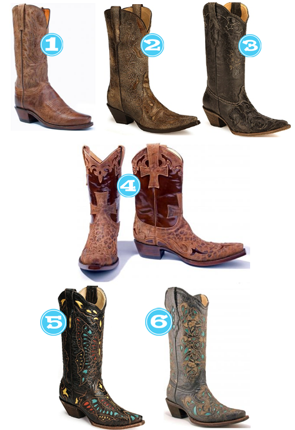

As you know from previous posts, I’m obsessed with boots this winter. Which is weird if you consider I probably won’t be able to get my feet into them come January.Anyway, I’ve managed to acquire several new pairs since last Spring and I have to share what I’m rockin’ right now. (Don’t worry, I didn’t pay this much for ANY of the boots you see here…I got AWESOME deals…you know, the kind of deals that make you tell everyone and their dog how much you actually spent.)
Cowboy Boots…NOT Just for Cowgirls Anymore!
October 27, 2009 by
Oh how I love cowboy boots….I love that they’re comfortable, I love that they’re cute, I love how I feel when I wear them…I could go on for DAYS! Of course some of you may be thinking, “She’s from Texas so of course she loves cowboy boots.” Not true, I love them for the simple fact that they’re AWESOME, and they seem to never go out of style!
So…If cowboy boots grew on trees, I would want this one planted in my backyard…

- Allen’s Boots, Lucchese 1883 Mad Dog Goat
- Shepler’s, Corral Africa Inlay
- Cavender’s, Corral Ladies Black Lizard Inlay
- Allen’s Boots, Ladies’ Old Gringo Cruzadas
- Cavender’s, Corral Ladies Multicolored Butterfly Western
- Allen’s Boots, Corral Black – Cognac / Turquoise Lase


Recent Comments